地政学
オークランドは首都ではないが、人口、企業本部、港湾、空港、移民受け入れでニュージーランドの外向きの力を担う。太平洋島嶼国、豪州、アジア、欧米を結び、国内政治にも住宅と移民の争点を投げかける都市である。

🇳🇿 ニュージーランド / 北島 / World City Atlas
二つの港に挟まれた火山の都市は、マオリの土地記憶、ポリネシアとアジアの移住、金融、港湾、映画、大学、住宅成長、島へ渡る休日を一つの生活圏に重ねている。
都市の骨格
オークランドは、ワイテマター港とマヌカウ港の間に広がる細い地形を骨格に、フェリー、空港、高速道路、大学、港湾、郊外住宅地、マラエ、島々をつなぐ。海に近い明るさと住宅難の圧力が同じ街路に表れる。
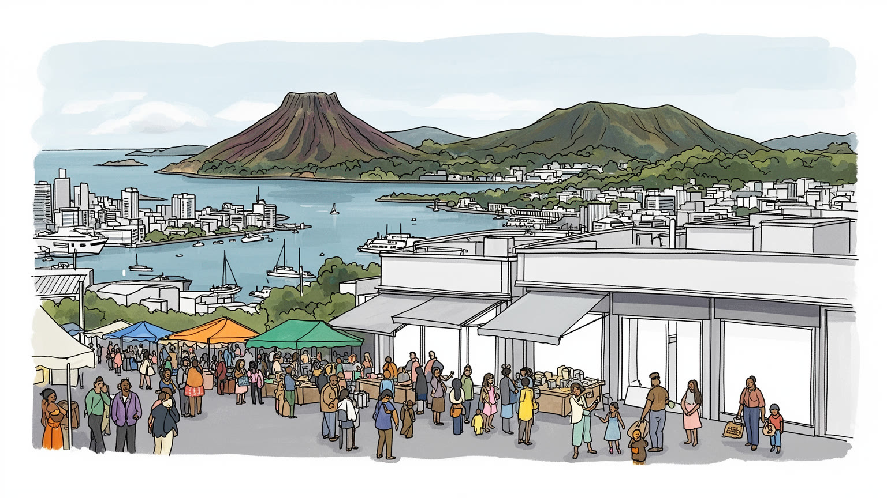
オークランドは首都ではないが、人口、企業本部、港湾、空港、移民受け入れでニュージーランドの外向きの力を担う。太平洋島嶼国、豪州、アジア、欧米を結び、国内政治にも住宅と移民の争点を投げかける都市である。
金融、港湾、空港、建設、観光、大学、医療、小売、映像制作、技術職が雇用を作る。高賃金の専門職の周囲で、倉庫、介護、飲食、清掃、配送、建設の仕事が厚く、家賃と通勤が暮らしを分ける現実も続いている街。
マオリのマラエ、サモアやトンガの教会、アジア系寺院、モスク、ラグビー、音楽、食、大学が文化を形づくる。都市の多様性は祭りの華やかさだけでなく、言語、礼拝、親族、教育の実務として根づく日々続く街だ。
住民は車、バス、鉄道、フェリー、自転車で港と郊外を行き来し、旅行者は火山丘、島、海岸、食市場を巡る。暮らしやすい海辺の都市という評判の下で、住宅費、渋滞、気候リスクが重い課題になる毎日でもある街。
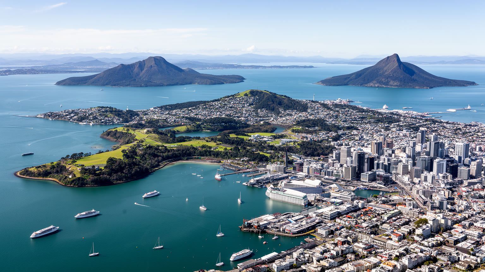
オークランドを読む出発点は、ワイテマター港とマヌカウ港に挟まれた地峡である。東はハウラキ湾へ開き、西はタスマン海側の入り江と丘陵へ向かうため、都市は海を背にするのではなく、複数の水面を使い分けて育ってきた。フェリーが中心部とノースショアや島々を結び、橋と高速道路が通勤圏を広げ、港湾は国際貿易を支える。市街には火山丘が点在し、マウンガと呼ばれる丘は眺望の名所であるだけでなく、マオリの要塞集落、聖なる土地、記憶の場所でもある。狭い地形は交通を集中させ、住宅地を南北へ長く伸ばし、渋滞と土地価格の上昇を招いた。海辺の美しさは都市の魅力を作る一方、湾岸の埋め立て、港湾拡張、下水、高潮、海面上昇の問題を隠さない。オークランドの地理は、港町、火山都市、郊外都市、島の玄関口という複数の顔を同時に持つ。地図を見る時には、中心の高層街だけでなく、マヌカウ側の労働地区、西の森、北の橋、東の海浜郊外まで広げて考える必要がある。海と丘が近いことは眺めの豊かさであると同時に、道路、住宅、排水、防災を難しくする都市条件なのである。中心部から数十分で牧場、黒砂の海岸、島のぶどう畑へ出られる近さも、都市圏の広がりを感覚的に教える。移動の便利さと自然の近さが共存するほど、保全と開発の線引きは日々の政治になる。この緊張は続く。
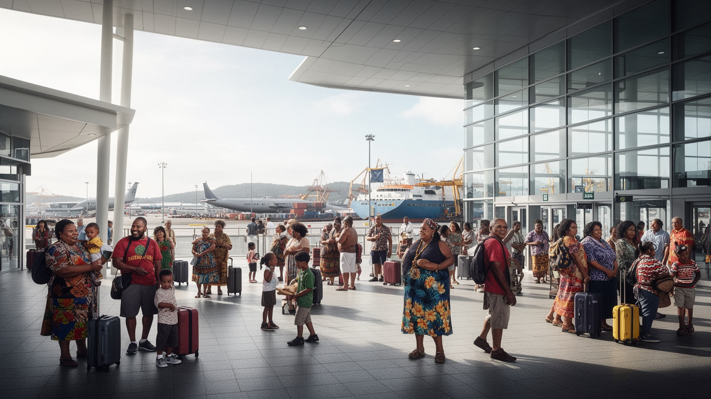
オークランドは、ニュージーランド最大の都市であると同時に、太平洋世界の結節点である。サモア、トンガ、クック諸島、ニウエ、フィジー、トケラウなどにルーツを持つ住民が多く、教会、家族、送金、スポーツ、音楽、葬儀、結婚式、学校を通じて島々との関係が日常化している。空港は観光客だけでなく、季節労働、親族訪問、留学、医療、移住の移動を支え、港は物資の流れをつなぐ。太平洋系コミュニティの存在は、オークランドの食、礼拝、ラグビー、ヒップホップ、街の言語感覚を豊かにした。一方で、低賃金労働、過密住宅、健康格差、教育支援、気候移住への備えは重い課題である。島嶼国にとって、オークランドは外貨と教育機会をもたらす場所であり、同時に若者が流出する先でもある。都市の多文化性を祝う時には、祭りの色彩だけでなく、送金を支える夜勤、教会を維持する寄付、親族を泊める家の狭さまで見る必要がある。気候変動で太平洋の島々が海面上昇や災害に直面するほど、オークランドの役割はさらに政治的になる。ここは単なる移民都市ではなく、太平洋の家族網、言語、信仰、労働が集まる都市であり、ニュージーランドの外交と国内福祉を結びつける現場でもある。学校では複数の島の言語や礼拝暦が交差し、スポーツクラブは親族と地域を結ぶ社交の場になる。太平洋の玄関口とは、国際線の発着だけでなく、家族の責任が海を越えて続く暮らし方でもある。
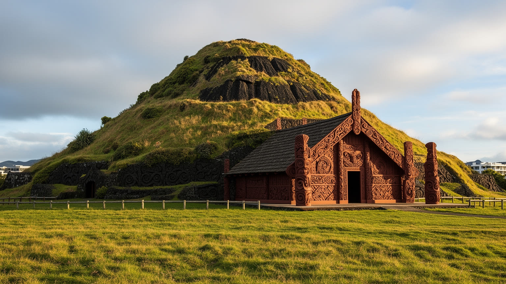
オークランドの土地は、英語名の都市になる前からターマキ・マカウラウとして知られ、肥沃な火山土、港、漁場、交易路をめぐって多くのイウィが関わってきた場所である。マウンガと呼ばれる火山丘には、かつての要塞集落や耕作の記憶が残り、都市の眺望台として消費されるだけではない。植民地化は土地の所有、港の利用、道路、町割りを大きく変え、マオリの生活圏を周縁化した。今日、マラエ、言語復興、土地返還、共同管理、教育、芸術、式典は、都市の中でマオリの存在を見えるものにしている。マウンガの保護をめぐっては、車の乗り入れ、観光利用、景観、聖性、地元住民の利便性が交差する。都市開発の現場では、考古遺産や水辺の環境、マナ・フェヌアの意見をどう扱うかが問われる。オークランドを読むには、マオリ文化を観光の装飾としてではなく、土地の権利、都市計画、教育、公共儀礼に関わる現在の政治として理解しなければならない。市街地の地名、丘の輪郭、海辺の道、学校の言語プログラムは、植民地都市の下にある古い地図を示している。多文化都市という言葉は、先住民の土地の上に成り立つ事実を抜きにすると浅くなる。ターマキ・マカウラウの記憶は、港の未来や住宅開発を考える時にも、都市の基礎として戻ってくる。博物館や祝祭で語られる歴史だけでなく、開発許可、通り名、環境修復、子どもの教育にその記憶が入り込む。都市が大きくなるほど、土地との関係を誰が説明し、誰が決めるのかが重要になる。
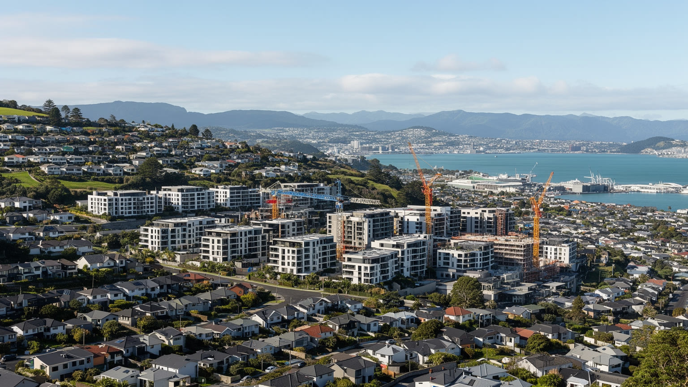
オークランドの暮らしを最も強く左右する課題の一つが住宅である。雇用、大学、移民、海辺の環境が人を引きつける一方、土地の制約、低密度の郊外開発、投資需要、建設費、交通網の偏りが価格と家賃を押し上げてきた。中心に近い地区では古い住宅が高額化し、駅や幹線道路沿いには集合住宅が増え、南部や西部の郊外には長い通勤を引き受ける世帯が広がる。過密住宅は、太平洋系、マオリ、移民、低所得世帯に特に重く、健康、学習、家族関係へ影響する。住宅難は単なる不動産市場の問題ではなく、保育、学校、職場、交通費、親族の支援を含む生活の配置を変える。新しい高密度開発は供給を増やす可能性を持つが、日照、緑地、公共交通、下水、地域の記憶を伴わなければ住みやすさを壊す。郊外を広げるだけでは、農地や自然を削り、車依存と排出を増やす。オークランドの成長を公平なものにするには、低価格住宅、賃貸の安定、交通投資、既存住民の声を同じ計画で扱う必要がある。海の近くに住む魅力と、都市で働く人が住み続けられる条件をどう両立させるかが、これからの都市の信頼を決める。住宅政策は景観論ではなく、誰がこの都市の未来へ参加できるかを問う制度なのである。古い州営住宅地の更新や駅前の再開発では、建物の戸数だけでなく、家賃、学校、買い物、地域のつながりが同時に変わる。家を失わずに街が変わる仕組みを持てるかが成長の質を左右する。
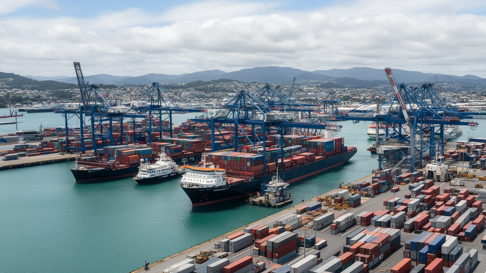
オークランドの経済は、海と空の物流なしには成り立たない。中心部の港はコンテナ、車両、クルーズ、フェリーを扱い、空港は旅客、貨物、生鮮品、国際ビジネス、移民家族の移動を支える。島国であるニュージーランドにとって、物流の遅れは小売価格、建設資材、輸出入、観光、製造業にすぐ響く。港湾労働、倉庫、トラック、通関、整備、清掃、警備、配送は、都市の見えにくい基盤である。だが、港が一等地の水辺を占めることは、都市景観、公共空間、騒音、排気、トラック交通、将来移転をめぐる議論を生む。クルーズ船は観光消費をもたらす一方、環境負荷や混雑への批判も受ける。空港周辺ではホテル、物流施設、工業団地が広がり、南部の雇用を支えるが、早朝勤務や公共交通の不足は労働者に負担を残す。オークランドの港湾を読むには、海辺の再開発だけでなく、日々の積み降ろし、道路容量、労働安全、脱炭素化を一体で見る必要がある。港を都市から切り離すか、中心部で共存させるかは、単なる土地利用ではなく、島国の首位都市が世界とどう接続するかという選択である。物流の効率と住民の水辺へのアクセスを両立できるかが、港町としての成熟を測る重要な課題になる。供給網が乱れると、スーパーの棚、建設現場、輸出農家、観光会社まで影響が広がる。普段は見えない港と空港の仕事が、危機の時ほど都市の生命線であることを示す。
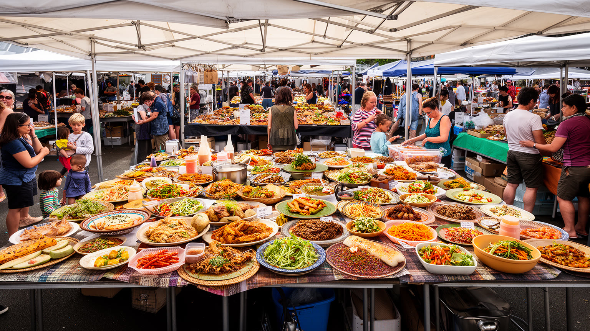
オークランドの食文化は、海産物、マオリの食の記憶、太平洋島嶼系の家庭料理、英国系の伝統、アジア系移民の食堂、ワインとカフェ文化が重なってできている。フィッシュマーケット、夜市、郊外の中華、韓国、インド、東南アジア、サモアやトンガの店、海辺のレストランは、都市の多層性を分かりやすく見せる。食は観光の楽しみであるだけでなく、移民が起業し、親族を雇い、言語を保ち、故郷とのつながりを維持する場所でもある。厨房では長時間労働、家賃、仕入れ、移民資格、保健規制、配達アプリとの関係が日々の課題になる。高級化した中心部の飲食と、郊外の家族経営の店では、同じ多文化性でも経済の条件が違う。マオリや太平洋系の食は、単なる珍しい味として消費されるのではなく、土地、海、共同体、祝祭の文脈を持っている。都市の食卓を読むと、移民の流れ、住宅地の分布、大学生の生活、港の物流、観光の視線がつながる。オークランドで何を食べるかは、どの地域を歩き、誰の商売を支え、どの歴史に触れるかという選択でもある。食の豊かさを都市の強みにするには、働く人の賃金、店舗の継続、地域市場の場所を守ることが欠かせない。料理は、海に開いた都市の親密な公共圏なのである。郊外のモールや市場では、週末の買い物が親族訪問や礼拝後の食事と結びつき、都市の社会関係を支える。食堂のテーブルは、移住者が都市に居場所を作る小さな広場でもある。
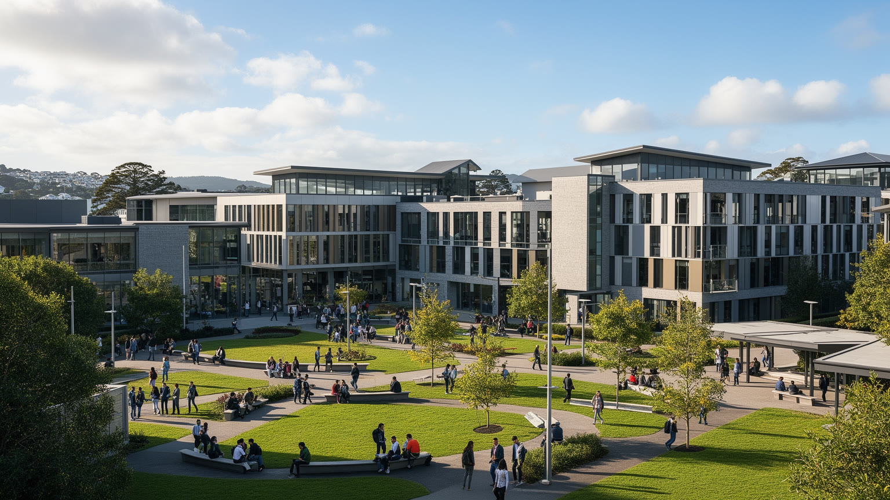
オークランドは、ニュージーランドの高等教育、研究、技術職、映像制作の大きな集積地である。大学や専門学校には国内外から学生が集まり、医療、工学、デザイン、ビジネス、環境、先住民研究、クリエイティブ分野の人材を育てる。留学生は授業料収入だけでなく、賃貸、飲食、小売、交通、家族訪問を通じて都市経済に関わる。技術企業、スタートアップ、ゲーム、映像制作、広告、金融ITは、南半球の市場としては小さいながら、英語圏とアジア太平洋を結ぶ位置を生かしている。一方で、若い専門職や学生にとって住宅費の高さは深刻で、卒業後に都市へ残れるかどうかを左右する。研究と産業を結ぶには、大学の知識だけでなく、投資、移民制度、国際便、実験的な公共調達、文化的多様性を活用する必要がある。映像産業は自然景観と技術者を生かし、海外制作とも接続するが、仕事はプロジェクトごとに不安定になりやすい。オークランドの知識経済を読む時、華やかな革新の言葉だけでは足りない。学生のアルバイト、研究者の契約、技術者の住まい、先住民知の扱い、留学生の孤立まで見る必要がある。若い人が学び、働き、家族を作れる都市であって初めて、教育と技術は一時的な成長ではなく、都市の長い基盤になる。研究室で生まれた技術が医療、農業、海洋、気候適応へ広がれば、小さな国内市場を越える力にもなる。そのためには、才能を呼ぶだけでなく、定着できる生活条件を整えることが欠かせない。
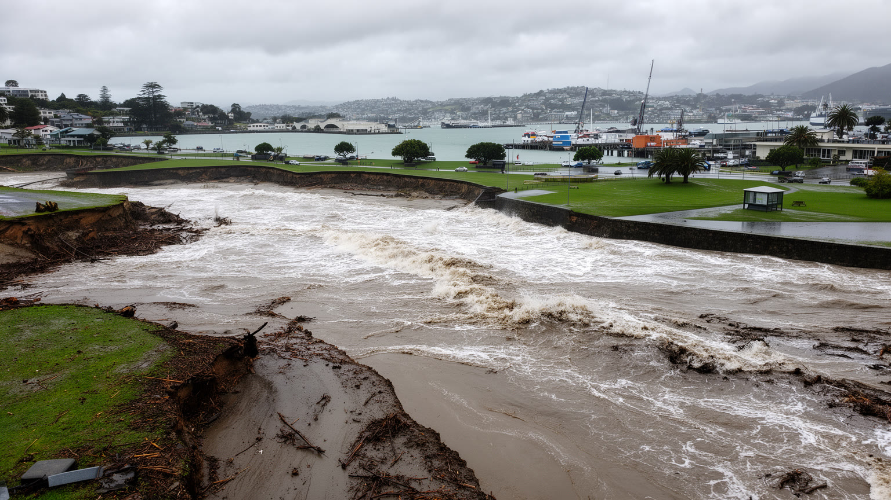
オークランドの気候は温暖で、雨が多く、海風と急な天候の変化が暮らしを形づくる。海岸、入り江、崖、低地、火山丘が近いため、晴れた日の景色は豊かだが、豪雨、洪水、土砂崩れ、高潮、海面上昇の影響も受けやすい。都市が拡大し、舗装面が増え、谷や湿地が失われるほど、強い雨は下水と河川に負担をかける。海辺の高価な住宅地だけでなく、低地の賃貸住宅、工業地、学校、道路も気候リスクにさらされる。保険料の上昇や修繕費は、すでに生活費の一部になりつつある。気候適応は、景観を守る話だけではなく、排水、住宅の断熱、避難、交通、緑地、マラエや地域施設の役割を含む都市政策である。海岸を護岸で固めるのか、自然の緩衝帯を戻すのか、危険な場所から将来撤退するのかは、住民の感情と財産に深く関わる。オークランドの海の近さは、週末の泳ぎやフェリーの楽しさを生む一方で、都市が水とどう共存するかを絶えず問い直す。気候変動は遠い未来の抽象論ではなく、雨の日の通勤、家のカビ、崖沿いの不安、港湾の運営に現れる。海辺の都市としての魅力を保つには、成長の速度と自然の限界を同じ地図で考えなければならない。強い雨の後に低地の道路が止まると、通学、救急、物流、出勤が一斉に影響を受ける。排水路や湿地の修復は見た目の緑化ではなく、都市の安全を支える基礎になる。
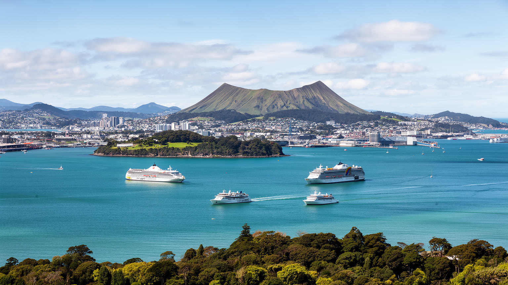
オークランド観光の魅力は、中心部だけで完結しない。フェリーでワイヘキ島やランギトト島へ渡り、火山丘に登り、海岸を歩き、ワイン産地を訪れ、港の市場や郊外の食堂に戻ることで、都市と自然の距離の近さが分かる。スカイラインを眺める視点は海上や丘の上へ移り、旅行者は短い滞在でも港湾都市、火山都市、島の都市を同時に経験できる。観光はホテル、飲食、ガイド、フェリー、レンタカー、文化施設、小売の雇用を支えるが、人気の島や海岸では混雑、住宅の観光利用、自然環境への負荷も生む。クルーズ客や短期滞在者が中心部だけを通過すると、地域に残る収入は限られる。マオリの歴史や太平洋系コミュニティを扱う観光では、文化を見世物にせず、語り手と地域への還元を尊重する姿勢が必要である。島々の生態系は外来種や踏圧に敏感で、アクセスの便利さと保全の緊張が続く。オークランドを旅することは、海に近い暮らしの明るさだけでなく、その海を支えるフェリー労働、港の物流、土地の歴史、気候リスクを知る機会でもある。良い観光は、写真の消費を越え、複数の地域へ時間と収入を分け、都市を深く歩くことから始まる。島へ渡る数十分が、都市のスケール感を大きく変える。帰りの船から見る高層街は、自然の中に浮かぶ観光地ではなく、働く港、住宅市場、移民の郊外を持つ大都市であることを思い出させる。
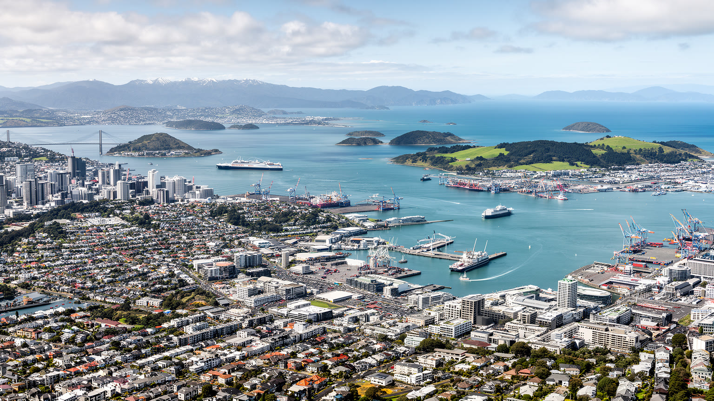
オークランドは、海に開いた暮らしやすい都市という明るい印象を持つ。港、フェリー、火山丘、島々、カフェ、多文化の食堂は、その印象を確かに支えている。しかし都市を深く読むには、その魅力を作る条件と負担を同じ場所で見る必要がある。ターマキ・マカウラウとしてのマオリの土地記憶、太平洋系コミュニティの家族網、アジアからの移住、港湾と空港の労働、大学と技術職、住宅難、気候リスクは、別々のテーマではなく一つの都市構造でつながっている。中心部の水辺を歩く時、そこには貿易、観光、公共空間、先住民の権利、脱炭素化の議論が重なる。郊外の食堂や教会を訪れる時、移民都市の豊かさと過密住宅、長い通勤、低賃金労働が見えてくる。火山丘から見える美しい湾は、地形の恵みであると同時に、土地利用と気候適応の難しさを示す。オークランドを総合的に理解することは、海辺の快適さを否定することではない。むしろ、その快適さを誰が享受し、誰が支え、誰が排除されやすいのかを問うことである。港、丘、島、マラエ、郊外の家、大学、食市場を同じ地図に置くと、この都市はニュージーランドの未来だけでなく、太平洋世界の変化を映す重要な場所として立ち上がる。旅行者にとっての開放感と、住民にとっての家賃や通勤の重さを重ねて見るほど、都市の輪郭は鮮明になる。オークランドの価値は景色だけでなく、海を共有する社会の作り方に現れる。